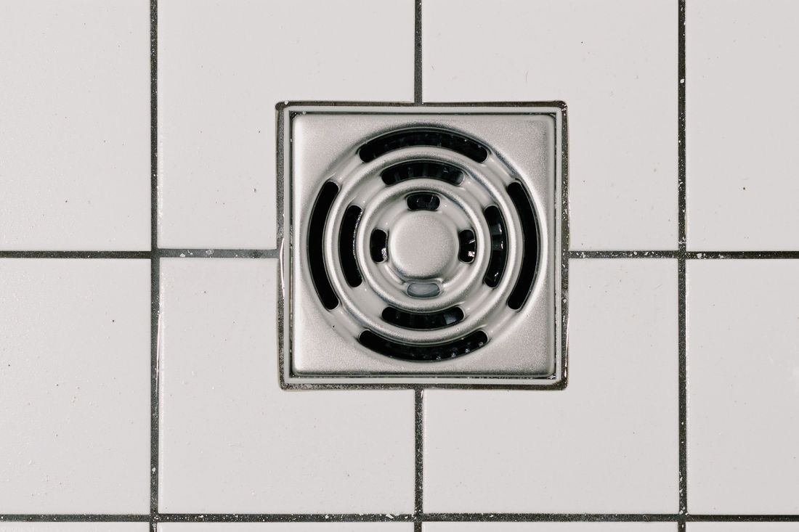

Su kaçağından kanal açmaya, tek ustadan
Arızayı bulmak, doğru yerde ve doğru yöntemle çözmek istiyoruz.
 Kaçak
KaçakCihazla su kaçağı tespiti
Duvar ve zemin kırılmadan önce termal kamera ve akustik dinleme gibi cihazlarla kaçağın yeri belirlenir. Böylece yalnız gereken noktaya müdahale edilir.
Servis çağır Kanal
KanalTıkanıklık ve kanal açma
Lavabo, gider ve ana hat tıkanıklıkları spiral ya da robotik kanal açma makinesiyle açılır. Hattın içi gerekirse kamerayla incelenir.
Servis çağır Kalorifer
KaloriferPetek ve kalorifer tesisatı
Isınmayan ya da sızdıran petek, hava alan hat ve vana sorunları kontrol edilir. Petek sökme-takma ve boru bağlantı işleri yapılır.
Servis çağır Yenileme
YenilemeBanyo ve mutfak tesisat yenileme
Eskiyen boruların yenilenmesi, banyo ve mutfak su-gider hatlarının yeniden çekilmesi. Fayans ve seramik öncesi tesisat hazırlığı da yapılır.
Servis çağır Tamir
TamirMusluk, batarya ve rezervuar değişimi
Damlatan musluk, sızdıran batarya, sürekli akan ya da dolmayan rezervuar için conta, şamandıra ya da komple değişim yapılır.
Servis çağır Arıza
ArızaSıhhi tesisat arıza
Klozet, lavabo, duş teknesi ve evye bağlantılarındaki sızıntı, gevşeme ve su basıncı sorunları yerinde giderilir.
Servis çağır Bağlantı
BağlantıKombi su bağlantısı
Kombinin su giriş, çıkış ve kalorifer hattı bağlantıları yapılır. Doğalgaz tarafı gerektiren işler yetkili kişilere bırakılır.
Servis çağır Kaçak
KaçakSu sayacı sonrası kaçak
Sayaç döndüğü hâlde su kullanmıyorsanız, kaçak sayaçtan sonraki hatta olabilir. Hat bölünerek test edilir, yeri bulunur.
Servis çağır
KokuRögar ve gider kokusu
Gider ve rögardan gelen kötü koku; sifon, havalandırma ya da hat sorunundan olabilir. Sebep bulunur, koku kaynağında giderilir.
Servis çağır